3 Data visualisation
3.1 Introduction
“The simple graph has brought more information to the data analyst’s mind than any other device.” — John Tukey
This chapter will teach you how to visualise your data using Altair. Python has several systems for making graphs, but altiar is one of the most elegant and versatile. Altair implements the declarative visualization much like the grammar of graphics, a coherent system for describing and building graphs. With altair, you can do more faster by learning one system and applying it in many places.
If you’d like to learn more about Altair before you start, I’d recommend reading “Altair: Interactive Statistical Visualizations for Python”, https://joss.theoj.org/papers/10.21105/joss.01057.pdf.
We should note that we are building this book using R with the package bookdown. Rendering Altair graphics using a python chunk is not straight forward but is not important for our use in VS Code. In VS Code the example chunks will render in the interactive Python viewer automatically. The following R code chunks show how we are rendering the Altair graphics in this book. Thanks to ijlyttle for his GitHub Gist.
# ```{R, echo=FALSE}
# vegawidget::as_vegaspec(py$chart$to_json())
# ```
# For Python examples that show chart.save()
#```{r, message = FALSE, echo=FALSE}
#knitr::include_graphics("screenshots/chartp_chartleft.png")
#```
3.1.1 Prerequisites
This chapter focusses on Altair. Language has been shifted using the material from Altair’s materials. To access the datasets, help pages, and functions that we will use in this chapter, load the Python data science tools by running this code:
If you run this code and get the error message “No module named ‘altair’” or “No module named ‘pandas’”, you’ll need to first install them.
You only need to install a package once, but you need to reload it every time you start a new session.
3.1.2 Altair data management
When specifying data in Altair, we can use pandas DataFrame objects or other Altair options. According to the Altair documentation, the use of a pandas DataFrame will prompt Altair to store the entire data set in JSON format in the chart object. You should be carefully creating Altair specs with all the data in the chart object for use in HTML or Jupyter Notebooks. If you try to plot a data set with more than 5000 rows, Altair will return a maxRowsError.
In this book, we will save the Altair chart as a ‘.png’ file to avoid dealing with large stored data in our ‘.html’ files. We have elected to use the Local Filesystem approach proposed by Altair. They do note that the filesystem approach may not work on some cloud-based Jupyter notebook services.
3.2 First steps
Let’s use our first graph to answer a question: Do cars with big engines use more fuel than cars with small engines? You probably already have an answer, but try to make your answer precise. What does the relationship between engine size and fuel efficiency look like? Is it positive? Negative? Linear? Nonlinear?
3.2.1 The mpg data frame
You can test your answer with the mpg data frame found in ggplot2 (aka ggplot2::mpg). A data frame is a rectangular collection of variables (in the columns) and observations (in the rows). The ‘mpg’ data contains observations collected by the US Environmental Protection Agency on 38 models of car. We will identify the ‘mpg’ data using mpg for the remainder of this introduction.
mpg = pd.read_csv("https://github.com/byuidatascience/data4python4ds/raw/master/data-raw/mpg/mpg.csv")Among the variables in mpg are:
displ, a car’s engine size, in litres.hwy, a car’s fuel efficiency on the highway, in miles per gallon (mpg). A car with a low fuel efficiency consumes more fuel than a car with a high fuel efficiency when they travel the same distance.
To learn more about mpg, read informat at data4python4ds.
3.2.2 Creating an Altair plot
To plot mpg, run this code to put displ on the x-axis and hwy on the y-axis:
The plot shows a negative relationship between engine size (displ) and fuel efficiency (hwy). In other words, cars with big engines use more fuel. Does this confirm or refute your hypothesis about fuel efficiency and engine size?
With Altair, you begin a plot with the function Chart(). Chart() creates a Chart object that you can add layers to. The only argument of Chart() is the dataset to use in the graph. So Chart(mpg) creates an Chart object upon which we can marks.
You complete your graph by adding one or more marks to Chart(). The attribute mark_point() adds a layer of points to your plot, which creates a scatterplot. Altair comes with many mark methods that each add a different type of layer to a plot. You’ll learn a whole bunch of them throughout this chapter.
Each mark method in Altair has an encode() attribute. This defines how variables in your dataset are encoded to visual properties. The encode() method is always paired with x and y arguments to specify which variables to map to the x and y axes. Altair looks for the encoded variables in the data argument, in this case, mpg. For pandas dataframes, Altair automatically determines the appropriate data type for the mapped column.
3.2.3 A graphing template
Let’s turn this code into a reusable template for making graphs with ggplot2. To make a graph, replace the bracketed sections in the code below with a dataset, a geom function, or a collection of mappings.
The rest of this chapter will show you how to complete and extend this template to make different types of graphs. We will begin with the <ENCODINGS> component.
3.2.4 Exercises
Run
Chart(mpg).mark_points(). What do you see?How many rows are in
mpg? How many columns?What does the
drvvariable describe?Make a scatterplot of
hwyvscyl.What happens if you make a scatterplot of
classvsdrv? Why is the plot not useful?
3.3 Aesthetic mappings
“The greatest value of a picture is when it forces us to notice what we never expected to see.” — John Tukey
In the plot below, one group of points (highlighted in red) seems to fall outside of the linear trend. These cars have a higher mileage than you might expect. How can you explain these cars?
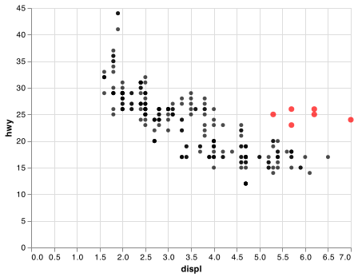
Let’s hypothesize that the cars are hybrids. One way to test this hypothesis is to look at the class value for each car. The class variable of the mpg dataset classifies cars into groups such as compact, midsize, and SUV. If the outlying points are hybrids, they should be classified as compact cars or, perhaps, subcompact cars (keep in mind that this data was collected before hybrid trucks and SUVs became popular).
You can add a third variable, like class, to a two dimensional scatterplot by mapping it to an encoding. An encoding is a visual property of the objects in your plot. Encodings include things like the size, the shape, or the color of your points. You can display a point (like the one below) in different ways by changing the values of its encoded properties. Since we already use the word “value” to describe data, let’s use the word “level” to describe encoded properties. Here we change the levels of a point’s size, shape, and color to make the point small, triangular, or blue:

You can convey information about your data by mapping the encodings in your plot to the variables in your dataset. For example, you can map the colors of your points to the class variable to reveal the class of each car.
(We don’t prefer British English, like Hadley, so don’t use colour instead of color.)
To map an encoding to a variable, associate the name of the encoding to the name of the variable inside encode(). Altair will automatically assign a unique level of the encoding (here a unique color) to each unique value of the variable, a process known as scaling. Altair will also add a legend that explains which levels correspond to which values.
The colors reveal that many of the unusual points are two-seater cars. These cars don’t seem like hybrids, and are, in fact, sports cars! Sports cars have large engines like SUVs and pickup trucks, but small bodies like midsize and compact cars, which improves their gas mileage. In hindsight, these cars were unlikely to be hybrids since they have large engines.
In the above example, we mapped class to the color encoding, but we could have mapped class to the size encoding in the same way. In this case, the exact size of each point would reveal its class affiliation. Mapping an unordered variable (class) to an ordered aesthetic (size) is not a good idea.
Or we could have mapped class to the opacity encoding, which controls the transparency of the points, or to the shape encoding, which controls the shape of the points.
# First
chart1 = (alt.Chart(mpg).
mark_circle().
encode(
x = "displ",
y = "hwy",
opacity = "class"
)
)
# Second
chart2 = (alt.Chart(mpg).
mark_point().
encode(
x = "displ",
y = "hwy",
shape = "class"
)
)
chart1.save("screenshots/altair_opacity.png")
#> WARN Channel opacity should not be used with an unsorted discrete field.
chart2.save("screenshots/altair_shape.png")
 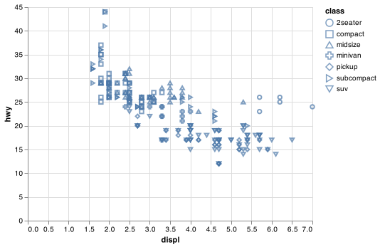
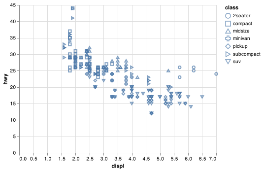
Altair will only use 8 shapes for one chart. Charting more than 8 shapes is not recommended as the shapes simply recycle.
For each encoding, you use encode() to associate the name of the encoding with a variable to display. The encode() function gathers together each of the encoded mappings used by a layer and passes them to the layer’s mapping argument. The syntax highlights a useful insight about x and y: the x and y locations of a point are themselves encodings, visual properties that you can map to variables to display information about the data.
Once you map an encoding, Altair takes care of the rest. It selects a reasonable scale to use with the encoding, and it constructs a legend that explains the mapping between levels and values. For x and y aesthetics, Altair does not create a legend, but it creates an axis line with tick marks and a label. The axis line acts as a legend; it explains the mapping between locations and values.
You can also configure the encoding properties of your mark manually. For example, we can make all of the points in our plot blue:
chart = (alt.Chart(mpg).
mark_circle().
encode(
x = "displ",
y = "hwy",
color = alt.value("blue")
)
)Here, the color doesn’t convey information about a variable, but only changes the appearance of the plot. To set an encoding manually, use alt.value() by name as an argument of your encode() function; i.e. the value goes inside of alt.value(). You’ll need to pick a level that makes sense for that encoding:
The name of a color as a character string.
The size of a point in pixels.
The shape of a point as a character string.
Note that only a limited set of mark properties can be bound to encodings, so for some (e.g. fillOpacity, strokeOpacity, etc.) the encoding approach using alt.value() is not available. Encoding settings will always override local or global configuration settings. There are other methods for manually encoding properties as explained in the Altair documentation
3.3.1 Exercises
Which variables in
mpgare categorical? Which variables are continuous? How can you see this information when you runmpg? (Hintmpg.dtypes)Map a continuous variable to
color,size, andshape. How do these aesthetics behave differently for categorical vs. continuous variables?What happens if you map the same variable to multiple encodings?
What does the
strokeencoding do? What shapes does it work with? (Hint: usemark_point())
3.4 Common problems
As you start to run Python code, you’re likely to run into problems. Don’t worry — it happens to everyone. I have been writing Python code for months, and every day I still write code that doesn’t work!
Start by carefully comparing the code that you’re running to the code in the book. Python is extremely picky, and a misplaced character can make all the difference. Make sure that every ( is matched with a ) and every " is paired with another ".
One common problem when creating Altair graphics as shown in this book, is to put the () in the wrong place: the ( comes before the alt.chart() command and the ) has to come at the end of the command.
For example the code below works in Python.
However, the complexity of the more details graphics necessicates placing the code on multiple lines. When using multiple lines we need the enclosing (). Make sure you haven’t accidentally excluded a ( or ) like this
or placed the () incorrectly like this
If you’re still stuck, try the help. You can get help about any Altair function from their website - https://altair-viz.github.io/, or hovering over the function name in VS Code. If that doesn’t help, carefully read the error message. Sometimes the answer will be buried there! But when you’re new to Python, the answer might be in the error message but you don’t yet know how to understand it. Another great tool is Google: try googling the error message, as it’s likely someone else has had the same problem, and has gotten help online.
3.5 Facets
One way to add additional variables is with encodings. Another way, particularly useful for categorical variables, is to split your plot into facets, subplots that each display one subset of the data.
To facet your plot by a single variable, use facet(). The first argument of facet() is . The variable that you pass to facet_wrap() should be discrete.
chart_f = (alt.Chart(mpg).
mark_circle().
encode(
x = "displ",
y = "hwy",
).
facet(
facet = "class",
columns = 4
)
)
chart_f.save("screenshots/altair_facet_1.png")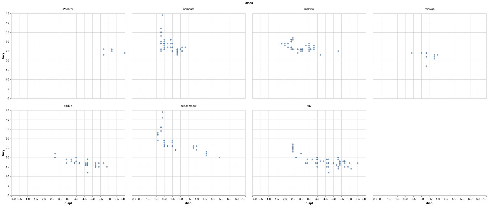
To facet your plot on the combination of two variables, The first argument of facet() is also column and the second is row. This time the formula should contain two variable names.
chart_f2 = (alt.Chart(mpg).
mark_circle().
encode(
x = "displ",
y = "hwy",
).
facet(
column = "drv",
row = "cyl"
)
)
chart_f2.save("screenshots/altair_facet_2.png")
#> WARN row encoding should be discrete (ordinal / nominal / binned).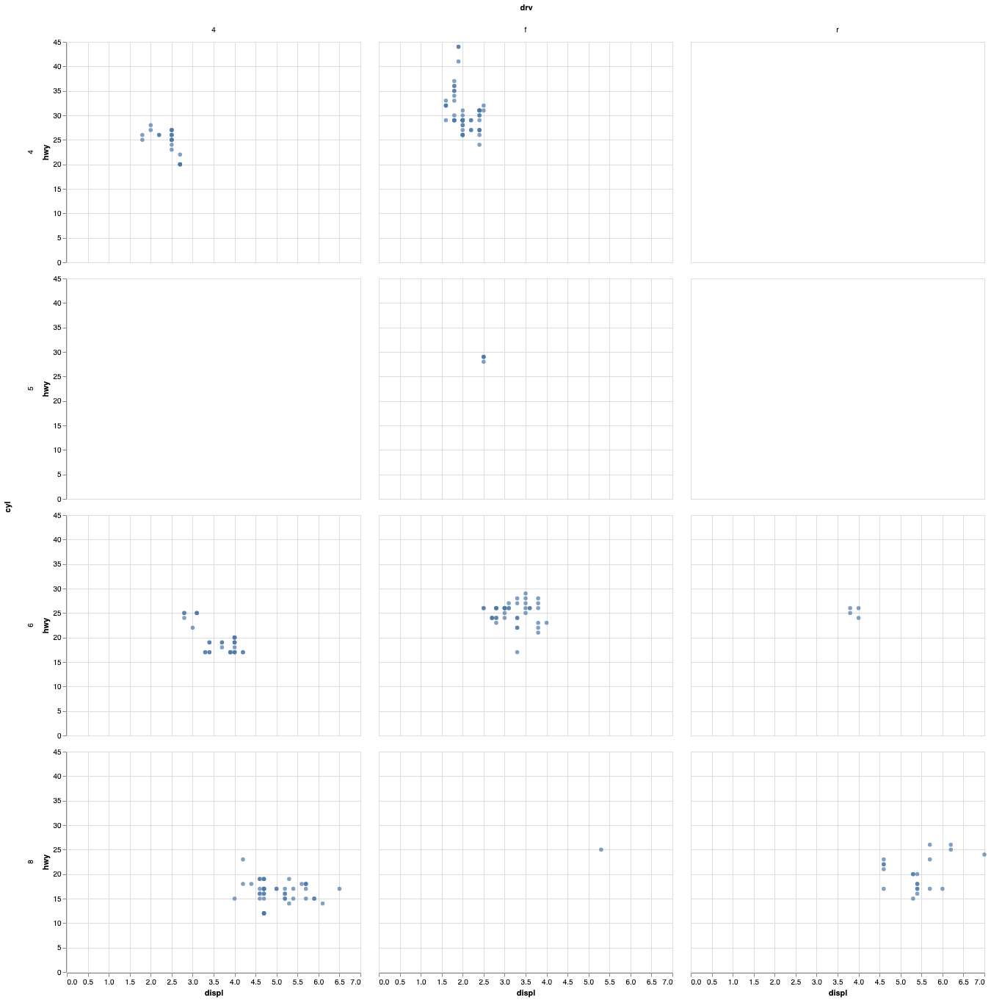
If you prefer to not facet in the rows or columns dimension, simply remove that facet argument. You can read more about compound charts in the Altair documentation.
3.5.1 Exercises
What happens if you facet on a continuous variable?
What do the empty cells in plot with
facet(column = "drv", row = "cyl")mean? How do they relate to this plot?What plots does the following code make? What does
.do?Take the first faceted plot in this section:
What are the advantages to using faceting instead of the colour aesthetic? What are the disadvantages? How might the balance change if you had a larger dataset?
When using
facet()you should usually put the variable with more unique levels in the columns. Why?
3.6 Geometric objects
How are these two plots similar?
chartp = (alt.Chart(mpg).
mark_circle().
encode(
x = "displ",
y = "hwy"
)
)
chartf = (alt.Chart(mpg).
encode(
x = "displ",
y = "hwy"
).
transform_loess("displ", "hwy").
mark_line()
)
chartp.save("screenshots/altair_basic_points.png")
chartf.save("screenshots/altair_smooth_line.png")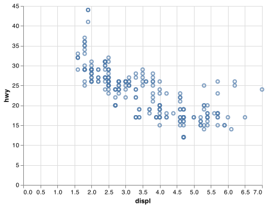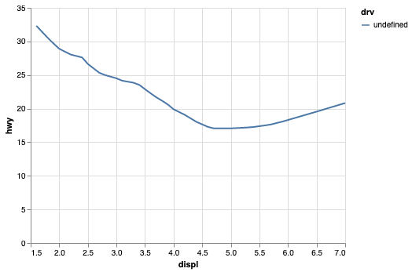
Both plots contain the same x variable, the same y variable, and both describe the same data. But the plots are not identical. Each plot uses a different visual object to represent the data. In Altair syntax, we say that they use different marks.
A mark is the geometrical object that a plot uses to represent data. People often describe plots by the type of mark that the plot uses. For example, bar charts use bar marks, line charts use line marks, boxplots use boxplot marks, and so on. Scatterplots break the trend; they use the point mark. As we see above, you can use different marks to plot the same data. The first plot uses the point mark, and the second plot uses the line mark, a smooth line fitted to the data is calculated using a transformation. To change the mark in your plot, change the mark function that you add to Chart().
Every mark function in Altair has encode arguments. However, not every encoding works with every mark. You could set the shape of a point, but you couldn’t set the “shape” of a line. On the other hand, you could set the type of line. mark_line() will draw a different line, with a different strokeDash, for each unique value of the variable that you map to strokeDash.
chartl = (alt.Chart(mpg).
transform_loess("displ", "hwy", groupby = ["drv"]).
mark_line().
encode(
x = "displ",
y = "hwy",
strokeDash = "drv"
)
)
chartl.save("screenshots/altair_dashed_lines.png")
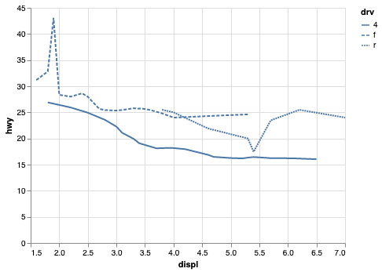
Here mark_line() separates the cars into three lines based on their drv value, which describes a car’s drivetrain. One line describes all of the points with a 4 value, one line describes all of the points with an f value, and one line describes all of the points with an r value. Here, 4 stands for four-wheel drive, f for front-wheel drive, and r for rear-wheel drive.
If this sounds strange, we can make it more clear by overlaying the lines on top of the raw data and then coloring everything according to drv.
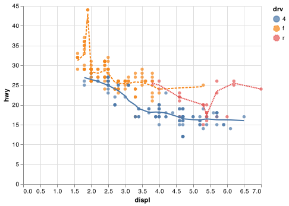
Notice that this plot contains two marks in the same graph! If this makes you excited, buckle up. We will learn how to place multiple marks on the same chart very soon.
Altair provides about 15 marks. The best way to get a comprehensive overview is the Altair marks page, which you can find at https://altair-viz.github.io/user_guide/marks.html.
Many marks, like mark_line(), use a single mark object to display multiple rows of data. For these marks, you can set the detail encoding to a categorical variable to draw multiple objects. Altair will draw a separate object for each unique value of the detail variable. In practice, Altair will automatically group the data for these marks whenever you map an encoding to a discrete variable (as in the strokeDash example). It is convenient to rely on this feature because the detail encoding by itself does not add a legend or distinguishing features to the marks.
chartleft = (alt.Chart(mpg).
encode(
x = "displ",
y = "hwy",
).
transform_loess("displ", "hwy").
mark_line()
)
chartmiddle = (alt.Chart(mpg).
encode(
x = "displ",
y = "hwy",
detail = "drv"
).
transform_loess("displ", "hwy", groupby = ["drv"]).
mark_line()
)
chartright = (alt.Chart(mpg).
encode(
x = "displ",
y = "hwy",
color=alt.Color("drv", legend=None)
).
transform_loess("displ", "hwy", groupby = ["drv"]).
mark_line()
)
chartleft.save("screenshots/altair_chartleft.png")
chartmiddle.save("screenshots/altair_chartmiddle.png")
chartright.save("screenshots/altair_chartright.png")
 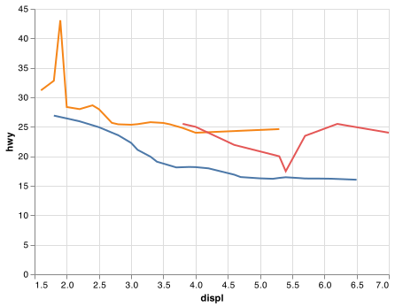
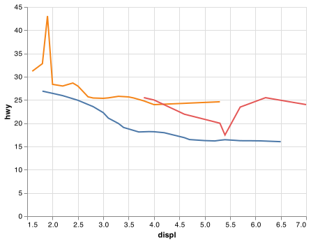
To display multiple marks in the same plot, you can used layered charts as shown in the example below that uses the chartleft object from the above code chunk:
chartp = (alt.Chart(mpg).
encode(
x = "displ",
y = "hwy"
).
mark_circle()
)
chart = chartp + chartleft
chart.save("screenshots/altair_chartcombine.png")

This, however, introduces some duplication in our code. Imagine if you wanted to change the y-axis to display cty instead of hwy. You’d need to change the variable in two places, and you might forget to update one. You can avoid this type of repetition by passing a set of encodings to a base alt.Chart(). Altair will treat these encodings as global encodings that apply to each mark layer in the layered chart. In other words, this code will produce the same plot as the previous code:
base =(alt.Chart(mpg).
encode(
x = "displ",
y = "hwy"
)
)
chart = base.mark_circle() + base.transform_loess("displ", "hwy").mark_line()
chart.save("screenshots/altair_combine_clean.png")
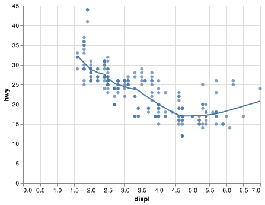 If you place encodings in an encode function, Altair will treat them as local mappings for the layer. It will use these mappings to extend or overwrite the base encodings for that layer only. This makes it possible to display different aesthetics in different layers. Alatair automatically chooses useful plot settings and chart configurations to allow you to think about data instead of the programming mechanics of the chart. You can review their guidance on customizing visualizations to see the varied ways to change the look of your graphic.
base =(alt.Chart(mpg).
encode(
x = "displ",
y = "hwy"
)
)
chart = base.encode(color = "drv").mark_circle() + base.transform_loess("displ", "hwy").mark_line()
chart.save("screenshots/altair_combine_clean_color.png")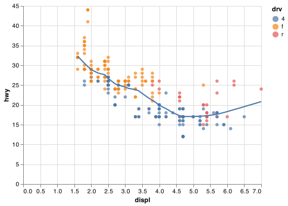
You can use the same idea to specify different data for each layer. Here, our smooth line displays just a subset of the mpg dataset, the subcompact cars. The local data argument in geom_smooth() overrides the global data argument in ggplot() for that layer only.
#column name of class does not work nicely with Altair filter.
base = (alt.Chart(mpg.rename(columns = {"class": "class1"})).
encode(
x = "displ",
y = "hwy"
)
)
chart_smooth_sub = (base.
transform_filter(
alt.datum.class1 == "subcompact"
).
transform_loess("displ", "hwy").
mark_line()
)
chart = base.encode(color = "class1").mark_circle() + chart_smooth_sub
chart.save("screenshots/altair_combine_clean_color_filter.png")
(You’ll learn how pandas filter works in the chapter on data transformations. To keep the same base chart, filtering is done with Altair in this example: for now, just know that this command selects only the subcompact cars.)
3.6.1 Exercises
What geom would you use to draw a line chart? A boxplot? A histogram? An area chart?
What does
legend=Noneinalt.Color()do? What happens if you remove it? Why do you think I used it earlier in the chapter?Recreate the Python code necessary to generate the following graphs.

 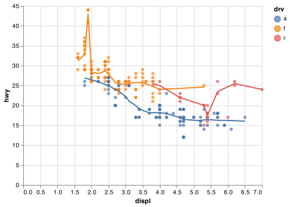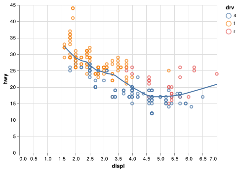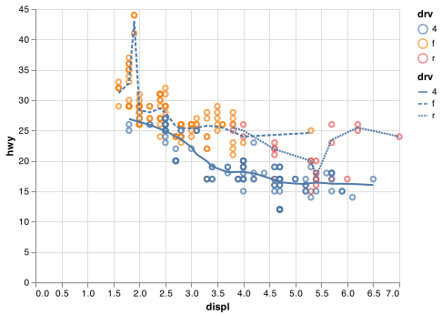
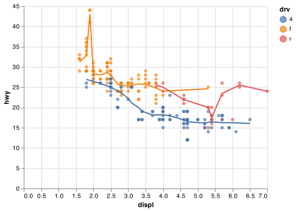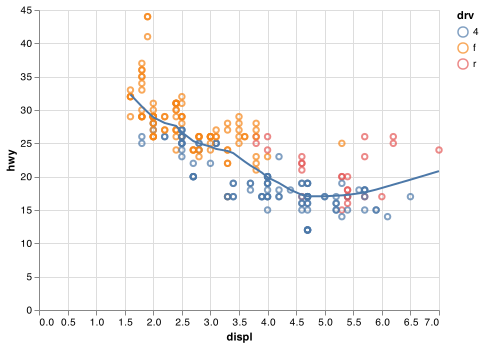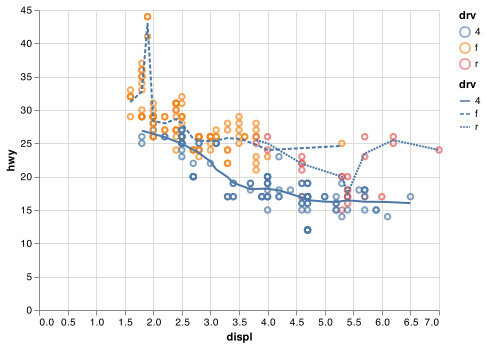
3.7 Statistical transformations
Next, let’s take a look at a bar chart. Bar charts seem simple, but they are interesting because they reveal something subtle about plots. Consider a basic bar chart, as drawn with mark_bar(). The following chart displays the total number of diamonds in the diamonds dataset, grouped by cut. The diamonds dataset comes in ggplot2 R package and can be used in Python using the following Python command. Note that we also need to use pandas to format a few of the columns as ordered categorical to have the diamonds DataFrame act like it does in R.
diamonds = pd.read_csv("https://github.com/byuidatascience/data4python4ds/raw/master/data-raw/diamonds/diamonds.csv")
diamonds['cut'] = pd.Categorical(diamonds.cut,
ordered = True,
categories = ["Fair", "Good", "Very Good", "Premium", "Ideal" ])
diamonds['color'] = pd.Categorical(diamonds.color,
ordered = True,
categories = ["D", "E", "F", "G", "H", "I", "J"])
diamonds['clarity'] = pd.Categorical(diamonds.clarity,
ordered = True,
categories = ["I1", "SI2", "SI1", "VS2", "VS1", "VVS2", "VVS1", "IF"])It contains information about ~54,000 diamonds, including the price, carat, color, clarity, and cut of each diamond. The chart shows that more diamonds are available with high quality cuts than with low quality cuts.
chart = (alt.Chart(diamonds).
encode(
x = "cut",
y = alt.Y("count():Q")
).
mark_bar().
properties(width = 400)
)
chart.save("screenshots/altair_diamond_bar.png")
On the x-axis, the chart displays cut, a variable from diamonds. On the y-axis, it displays count, but count is not a variable in diamonds! Many graphs, like scatterplots, plot the raw values of your dataset. Other graphs, like bar charts, calculate new values to plot:
bar charts, histograms, and frequency polygons bin your data and then plot bin counts, the number of points that fall in each bin.
smoothers fit a model to your data and then plot predictions from the model.
boxplots compute a robust summary of the distribution and then display a specially formatted box.
The algorithm used to calculate new values for a graph is called a transform, short for transformation. The figure below describes how this process works with mark_bar().

You must explicitely define the transformation a mark uses through transformations using alt.Y() or alt.X() function. For example, mark_bar() requires the y encoding alt.Y("count():Q"). A histogram is created using mark_bar() with transformations on both the x and y axes. The bin argument accepts a boolean or an alt.Bin() function where the argument maxbins can be used - bin=alt.Bin(maxbins=100).
chart = (alt.Chart(diamonds).
encode(
x =alt.X("price", bin=True),
y =alt.Y("count()")
).
mark_bar()
)
chart.save("screenshots/altair_histogram.png")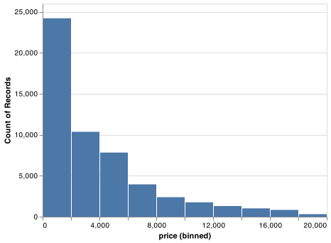
For more complicated transformations Altair provides transform functions. We saw one of these transforms previously when we used mark_line() to describe each drive type. If you are working with pandas DataFrames then you may want to do these transformations using pandas. Altair’s transformations can be used with DataFrames as well as JSON files or URL pointers to CSV files.
chartright = (alt.Chart(mpg).
encode(
x = "displ",
y = "hwy",
color=alt.Color("drv", legend=None)
).
transform_loess("displ", "hwy", groupby = ["drv"]).
mark_line()
)Finally, mark_boxplot() is available which does the statistical transformations for you after you specify the encodings for the x and y axes.
chart = (alt.Chart(diamonds).
encode(
y ="price",
x ="cut"
).
mark_boxplot(size = 25).
properties(width = 300)
)
chart.save("screenshots/altair_boxplot.png")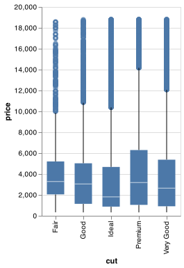
3.8 Position adjustments
There’s one more piece of magic associated with bar charts. You can colour a bar chart using either the stroke aesthetic, or, more usefully, color:
chart_left = (alt.Chart(diamonds).
mark_bar().
encode(
x = "cut",
y = alt.Y("count()"),
stroke = "cut"
).
properties(width = 200)
)
chart_right = (alt.Chart(diamonds).
mark_bar().
encode(
x = "cut",
y = alt.Y("count()"),
color = "cut"
).
properties(width = 200)
)
chart_left.save("screenshots/altair_bar_linecolor.png")
chart_right.save("screenshots/altair_bar_fillcolor.png")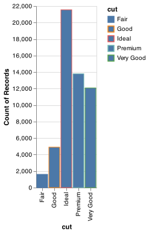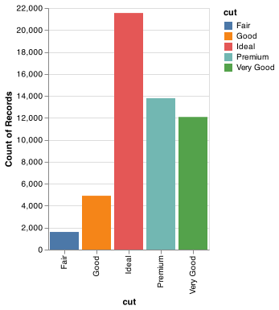
Note what happens if you map the color encoding to another variable, like clarity: the bars are automatically stacked. Each colored rectangle represents a combination of cut and clarity.
chart = (alt.Chart(diamonds).
mark_bar().
encode(
x = "cut",
y = alt.Y("count()"),
color = "clarity"
).
properties(width = 200)
)
chart.save("screenshots/stacked_barchart.png") 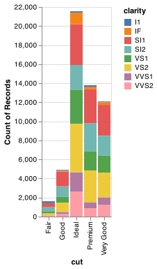
The stacking is performed automatically by mark_bar(). If you don’t want a stacked bar chart, you can use use the stack argument in alt.Y() one of three other options: "identity", "dodge" or "fill".
position = "identity"will place each object exactly where it falls in the context of the graph. This is not very useful for bars, because it overlaps them. To see that overlapping we either need to make the bars slightly transparent by settingalphato a small value, or completely transparent by settingfill = NA.chart_left = (alt.Chart(diamonds). mark_bar(). encode( x = "cut", y = alt.Y("count()", stack=None), color = "clarity", opacity = alt.value(1/5) ). properties(width = 200) ) chart_right = (alt.Chart(diamonds). mark_bar(). encode( x = "cut", y = alt.Y("count()", stack=None), stroke = "clarity", color = alt.value("none") ). properties(width = 200) ) chart_left.save("screenshots/altair_nostack_opacity.png") chart_right.save("screenshots/altair_nostack_lines.png")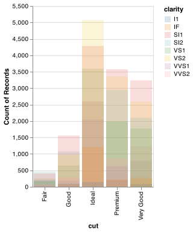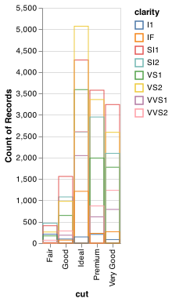
position = "fill"works like stacking, but makes each set of stacked bars the same height. This makes it easier to compare proportions across groups.chart = (alt.Chart(diamonds). mark_bar(). encode( x = "cut", y = alt.Y("count()", stack='normalize'), color = "clarity" ). properties(width = 200) ) chart.save("screenshots/altair_normalize_bar.png")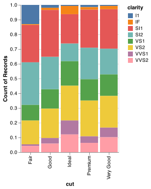
Placing overlapping objects directly beside one another is done by using the
columnencoding. This makes it easier to compare individual values with a common baseline.chart = (alt.Chart(diamonds). mark_bar(). encode( x='clarity', y=alt.Y('count()'), color='clarity', column='cut' ) ) chart.save("screenshots/altair_position_dodge.png")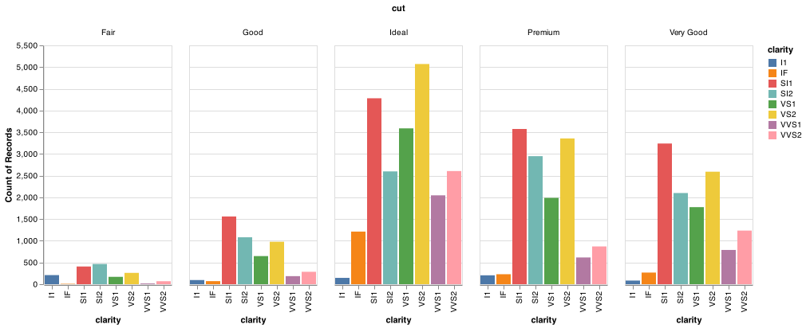
Altair does not have a simple way to add random jitter to points using an encoding or simple argument to alt.X() or alt.Y(). Altair can create a jittered point plot, also called a stripplot. However, it is not as straight forward.
We should note that Altair also does not provide piechart or donut chart marks as well.
3.9 Coordinate systems (maps)
Coordinate systems are generally on an x and y axis in Altair. This coordinate system is the Cartesian coordinate system, where the x and y positions act independently to determine the location of each point. Maps are on a Cartesian coordinate system, but their behavior is different as they require a transformation or projection of the globe to an x and y Cartesian plane.
Visualizing data on maps can get complicated quickly. Altair has a some mapping marks available for charts. The data formats for plotting with maps also get more involved. You can use the gpdvega package to help with spatial data in Altair. Many Python users us geopandas or Shapely to handle spatial data in Python. PennState has a nice list of spatial tools for Python.
3.10 The layered grammar of graphics
In the previous sections, you learned much more than how to make scatterplots, bar charts, and boxplots. You learned a foundation that you can use to make any type of plot with ggplot2. To see this, let’s add position adjustments, stats, coordinate systems, and faceting to our code template:
(alt.Chart(<DATA>).
encoding(
).facet(
column = <FACET VARIABLE>
).
<TRANFORM_FUNCTION>().
<MARK_FUNCTION>().
properties(
width = ,
height =
)
)Altair’s general template takes four main parameters - alt.Chart(), mark_*(), encode(), and facet(). In practice, only need to supply the first three parameters to make a chart because Altair will provide useful defaults for everything except the data, the encodings, and the mark function.
The parameters in the template compose the grammar of graphics, a formal system for building plots. The grammar of graphics is based on the insight that you can uniquely describe any plot as a combination of a dataset, a mark, a set of encodings, a transformation, a position adjustment, and a faceting scheme.
To see how this works, consider how you could build a basic plot from scratch: you could start with a dataset and then transform it into the information that you want to display (with a stat).

Next, you could choose a geometric object to represent each observation in the transformed data. You could then use the aesthetic properties of the geoms to represent variables in the data. You would map the values of each variable to the levels of an aesthetic.
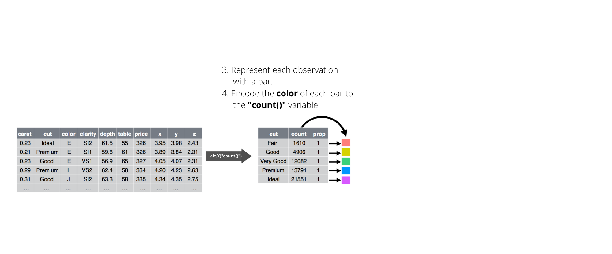
You’d then select a coordinate system to place the geoms into. You’d use the location of the objects (which is itself an aesthetic property) to display the values of the x and y variables. At that point, you would have a complete graph, but you could further adjust the positions of the geoms within the coordinate system (a position adjustment) or split the graph into subplots (faceting). You could also extend the plot by adding one or more additional layers, where each additional layer uses a dataset, a geom, a set of mappings, a stat, and a position adjustment.
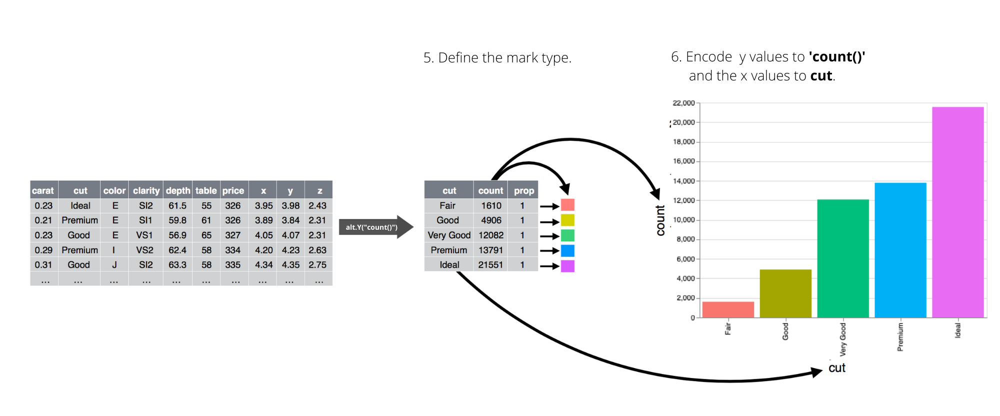
You could use this method to build any plot that you imagine. In other words, you can use the code template that you’ve learned in this chapter to build hundreds of thousands of unique plots.
3.11 Altair’s grammar of graphics
Plotnine is a Python implementation of ggplot2 in R’s grammar of graphics using matplotlib as the plotting backend. Altair’s implementation of the grammar of graphics, much like ggplot2 or plotnine at a high level. However, it uses the Vega-Lite grammar of graphics constructs and plotting backend.
Below are some useful links that will help you dig deeper into the Altair implementation of the grammar of graphics.
- Altair mark guidance
- Altair encoding guidance
- Altair facet guidance
- Altair tranformations guidance
- Altair chart customization
- Altair sorting barcharts
- Altair theme editing
- Altair Encoding data types